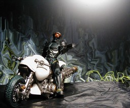
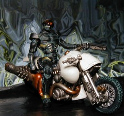

S.I.C. 匠魂 Vol. 5 ハカイダー ver.2 ＆ ハカイダーバイク

やや右から(無頼風)
左から(ヤンキー風) S.I.C. 匠魂 vol.5 のハカイダーとハカイダーバイク(白)です。いちおう扱いとしては、バイクは映画『人造人間ハカイダー』の黒がオリジナルカラーで、白がアーティストカラーになるようです。ちなみに、原作や TV のキカイダーに出てきたハカイダーは白いカラスというバイクに乗るので、私は白いバイクに乗せて撮りました。高さは 8cm ぐらいですが、バイクの長さは 16cm ぐらいあります。 ちなみに匠魂 vol. 2 にもハカイダーがあります。匠魂でない S.I.C. にもハカイダーが 2 バージョンあります。さらに、匠魂 vol. 1 にはガッタイガーがあります。ハカイダーより先にガッタイガーを出すところが匠魂らしいというかなんというか……。まぁ、匠魂じゃないのを買ってネってことだったのかもしれませんが。 背景は Winamp のMilkDropプラグインをWinShotしたものです。 更新：06/02/15 初公開：2006年02月16日 04:32:32 Links: S.I.C.: http://www.tamashii.jp/sic/ 人造人間ハカイダー: http://www.amazon.co.jp/exec/obidos/ASIN/B0008JF67U MilkDrop: http://www.milkdrop.co.uk/ WinShot: http://www.woodybells.com/winshot.html
後方参照 (1 件)
- URL参照 ハカイダーが話題になっていたので↓の写真を Twitter (X)… 2024-08-26T04:03:48Z